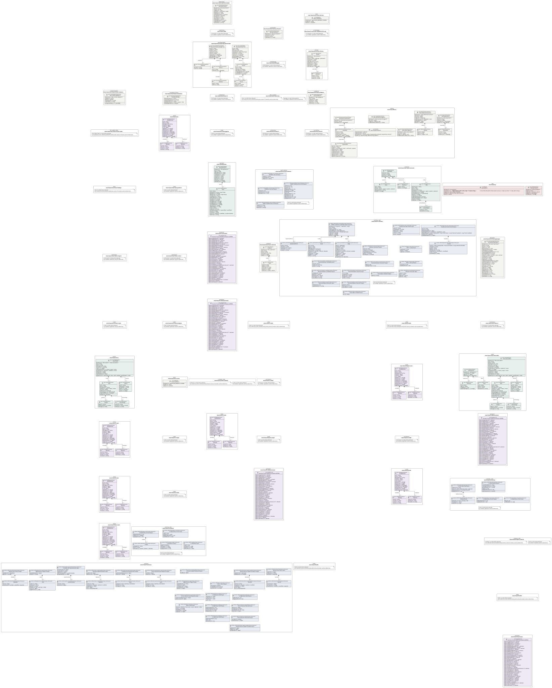

UML — smart-base
Generated by cat-harness-tools/scripts/gen-uml-overview.ts — do not edit. Every named sub-graph the smart-base instance declares, one box each, with the node schema kinds found in it.
Sources (same model): PlantUML · Mermaid · Graphviz DOT


The interactive view lays this diagram out in your browser with Graphviz, and needs JavaScript. Without it, pick Portrait or Landscape, or read the DOT source.
| sub-graph | directory | graph typologies | node schema | nodes | cohesion | in | out |
|---|---|---|---|---|---|---|---|
smart-base/smart-base-site-docs | smart-base/site-docs | docs | ts: JsonManifest | not measured | |||
smart-base/smart-base-qa-checkers | smart-base/qa-checkers | qa-checkers | QaCheckerNodeSchema | not measured | |||
smart-base/smart-base-block-kinds | smart-base/block-kinds | block-kinds | BlockKindNodeSchema | not measured | |||
smart-base/smart-base-content-adapters | smart-base/content-adapters | content-adapters | ContentAdapterNodeSchema | not measured | |||
smart-base/smart-base-translations | smart-base/translations | translation-sources | TranslationConfigSchema | not measured | |||
smart-base/library | smart-base/library | library | ImagesSidecarSchema; ts: VerdictFile; VectorLabelsSidecarSchema; BlockSummariesSidecarSchema; KeywordsFileSchema; ReferencedSourceSchema | not measured | |||
smart-base/l1-extraction-9789240116191-eng | smart-base/l1-extractions/9789240116191-eng | l1-extraction | l1-extraction: could not determine | not measured | |||
smart-base/methodologies | smart-base/methodologies | methodology | methodology: could not determine | not measured | |||
smart-base/collab | smart-base/collab | cat-harness | cat-harness: could not determine | not measured | |||
smart-base/smart-base-artifact-index | smart-base/fhir-artifact-index | fhir-artifact-index | fhir-artifact-index: could not determine | not measured | |||
smart-base/tools | smart-base/tools | tools | ToolDefinitionSchema | not measured | |||
smart-base/qa | smart-base/test/results | qa | ts: QaResult; QaIndexSchema | not measured | |||
smart-base/smart-base-themes | smart-base/themes | themes | ThemeSchema | not measured | |||
smart-base/smart-base-docs | smart-base/docs | docs, ig-pages | docs: could not determine; ig-pages: could not determine | not measured | |||
smart-base/smart-base-document-kinds | smart-base/document-kinds | document-kinds | DocumentKindKind; DocumentKindCoverageKind | not measured | |||
smart-base/smart-base-findings | smart-base/findings | docs | docs: could not determine | not measured | |||
smart-base/smart-base-platform | smart-base/platform | code | code: could not determine | not measured | |||
smart-base/smart-base-typologies | smart-base/typologies | typologies | GraphTypologyNodeSchema | not measured | |||
smart-base/smart-base-validators | smart-base/validators | validators | ValidatorNodeSchema | not measured | |||
smart-base/smart-base-L1 | smart-base/L1 | cat-harness | cat-harness: could not determine | not measured | |||
smart-base/smart-base-L2 | smart-base/L2 | cat-harness | cat-harness: could not determine | not measured | |||
smart-base/smart-base-L2-bpmn | smart-base/L2-bpmn | cat-harness | cat-harness: could not determine | not measured | |||
smart-base/smart-base-L2-dmn | smart-base/L2-dmn | cat-harness | cat-harness: could not determine | not measured | |||
smart-base/smart-base-L3 | smart-base/L3 | cat-harness | cat-harness: could not determine | not measured | |||
smart-base/smart-base-L4 | smart-base/L4 | cat-harness | cat-harness: could not determine | not measured | |||
smart-base/smart-base-schemas | smart-base/schemas | code, schemas | schema: skills/guideline-use-case/input.schema.json; schema: skills/guideline-use-case/output.schema.json; schema: skills/smart-guideline-end-to-end/input.schema.json; schema: skills/smart-guideline-end-to-end/output.schema.json; code: could not determine | not measured | |||
smart-base/smart-base-pipeline | smart-base/pipeline | code | code: could not determine | not measured | |||
smart-base/smart-base-scripts | smart-base/scripts | code | code: could not determine | not measured | |||
smart-base/smart-base-templates | smart-base/templates | code | code: could not determine | not measured | |||
smart-base/smart-base-skills | smart-base/skills | skills | VoiceSkillSchema; SkillTopicsSchema | not measured | |||
smart-base/smart-base-scenarios | smart-base/scenarios | scenarios | RoleGraphSchema | not measured | |||
smart-base/smart-base-code-lists | smart-base/code-lists | code-list | CodeListSchema | not measured | |||
smart-base/glossary | smart-base/glossary | glossary | GlossarySchema | not measured | |||
smart-base/voices | smart-base/skills/voices | voices | VoiceProfileSchema | 4 | 0.00 | 0 | 0 |
smart-base/docs-source | smart-base/site-docs/source | docs | ts: JsonManifest | not measured | |||
smart-base/collab-processes | smart-base/collab/processes | processes | ext: omg-bpmn-2.0 | not measured | |||
smart-base/l1-schemas | smart-base/L1/schemas | schemas, code | schema: skills/classify-and-code-content/input.schema.json; schema: skills/classify-and-code-content/output.schema.json; schema: skills/dak-l1-library/input.schema.json; schema: skills/dak-l1-library/output.schema.json; schema: skills/indicator-extraction/input.schema.json; schema: skills/indicator-extraction/output.schema.json; schema: skills/recommendation-candidates/input.schema.json; schema: skills/recommendation-candidates/output.schema.json; schema: skills/recommendation-extraction/input.schema.json; schema: skills/recommendation-extraction/output.schema.json; schema: skills/recommendation-scenarios/input.schema.json; schema: skills/recommendation-scenarios/output.schema.json; schema: skills/transcription-verbatim/input.schema.json; schema: skills/transcription-verbatim/output.schema.json; schema: generated/recommendation-graph.schema.json; code: could not determine | not measured | |||
smart-base/l1-skills | smart-base/L1/skills | skills | skills: could not determine | not measured | |||
smart-base/l1-processes | smart-base/L1/processes | processes | ext: omg-bpmn-2.0 | not measured | |||
smart-base/l1-tools | smart-base/L1/tools | tools | ToolDefinitionSchema | not measured | |||
smart-base/l1-scripts | smart-base/L1/scripts | code | code: could not determine | not measured | |||
smart-base/l2-schemas | smart-base/L2/schemas | schemas, code | schema: skills/l2-dak-authoring/input.schema.json; schema: skills/l2-dak-authoring/output.schema.json; schema: skills/l2-dependency-choice/input.schema.json; schema: skills/l2-dependency-choice/output.schema.json; code: could not determine | not measured | |||
smart-base/l2-skills | smart-base/L2/skills | skills | skills: could not determine | not measured | |||
smart-base/L2-collab | smart-base/L2/collab | cat-harness | cat-harness: could not determine | not measured | |||
smart-base/l2-collab-processes | smart-base/L2/collab/processes | processes | ext: omg-bpmn-2.0 | not measured | |||
smart-base/l2-tools | smart-base/L2/tools | tools | ToolDefinitionSchema | not measured | |||
smart-base/l2-scripts | smart-base/L2/scripts | code | code: could not determine | not measured | |||
smart-base/l2-bpmn-schemas | smart-base/L2-bpmn/schemas | schemas, code | schemas: could not determine; code: could not determine | not measured | |||
smart-base/l2-bpmn-tools | smart-base/L2-bpmn/tools | tools | ToolDefinitionSchema | not measured | |||
smart-base/l2-bpmn-scripts | smart-base/L2-bpmn/scripts | code | code: could not determine | not measured | |||
smart-base/l2-dmn-schemas | smart-base/L2-dmn/schemas | schemas, code | schemas: could not determine; code: could not determine | not measured | |||
smart-base/l2-dmn-tools | smart-base/L2-dmn/tools | tools | ToolDefinitionSchema | not measured | |||
smart-base/l3-schemas | smart-base/L3/schemas | schemas, code | schema: skills/l3-dependency-choice/input.schema.json; schema: skills/l3-dependency-choice/output.schema.json; schema: skills/l3-readiness/input.schema.json; schema: skills/l3-readiness/output.schema.json; code: could not determine | not measured | |||
smart-base/l3-skills | smart-base/L3/skills | skills | skills: could not determine | not measured | |||
smart-base/L3-collab | smart-base/L3/collab | cat-harness | cat-harness: could not determine | not measured | |||
smart-base/l3-collab-processes | smart-base/L3/collab/processes | processes | ext: omg-bpmn-2.0 | not measured | |||
smart-base/l3-tools | smart-base/L3/tools | tools | ToolDefinitionSchema | not measured | |||
smart-base/l4-schemas | smart-base/L4/schemas | schemas | schema: skills/activate-accepted-guidance/input.schema.json; schema: skills/activate-accepted-guidance/output.schema.json; schema: skills/apply-decision-support/input.schema.json; schema: skills/apply-decision-support/output.schema.json; schema: skills/complete-sdc-questionnaire/input.schema.json; schema: skills/complete-sdc-questionnaire/output.schema.json; schema: skills/extract-questionnaire-response/input.schema.json; schema: skills/extract-questionnaire-response/output.schema.json; schema: skills/inform-client/input.schema.json; schema: skills/inform-client/output.schema.json; schema: skills/l4-application-brief/input.schema.json; schema: skills/l4-application-brief/output.schema.json; schema: skills/l4-application-build/input.schema.json; schema: skills/l4-application-build/output.schema.json; schema: skills/record-decision-rationale/input.schema.json; schema: skills/record-decision-rationale/output.schema.json; schema: skills/review-client-history/input.schema.json; schema: skills/review-client-history/output.schema.json; schema: skills/review-decision-support-guidance/input.schema.json; schema: skills/review-decision-support-guidance/output.schema.json | not measured | |||
smart-base/l4-skills | smart-base/L4/skills | skills | skills: could not determine | not measured | |||
smart-base/l4-processes | smart-base/L4/processes | processes | ext: omg-bpmn-2.0 | not measured | |||
smart-base/l4-tools | smart-base/L4/tools | tools | ToolDefinitionSchema | not measured |
Nodes, cohesion, in and out are the detangler’s pinned measurements for the same directory (bun run cat kg:detangle; skill graph-detanglement). Not measured means the detangler does not scan that directory, not that it has no edges.
Sub-graphs
- smart-base/smart-base-site-docs
- smart-base/smart-base-qa-checkers
- smart-base/smart-base-block-kinds
- smart-base/smart-base-content-adapters
- smart-base/smart-base-translations
- smart-base/library
- smart-base/l1-extraction-9789240116191-eng
- smart-base/methodologies
- smart-base/collab
- smart-base/smart-base-artifact-index
- smart-base/tools
- smart-base/qa
- smart-base/smart-base-themes
- smart-base/smart-base-docs
- smart-base/smart-base-document-kinds
- smart-base/smart-base-findings
- smart-base/smart-base-platform
- smart-base/smart-base-typologies
- smart-base/smart-base-validators
- smart-base/smart-base-L1
- smart-base/smart-base-L2
- smart-base/smart-base-L2-bpmn
- smart-base/smart-base-L2-dmn
- smart-base/smart-base-L3
- smart-base/smart-base-L4
- smart-base/smart-base-schemas
- smart-base/smart-base-pipeline
- smart-base/smart-base-scripts
- smart-base/smart-base-templates
- smart-base/smart-base-skills
- smart-base/smart-base-scenarios
- smart-base/smart-base-code-lists
- smart-base/glossary
- smart-base/voices
- smart-base/docs-source
- smart-base/collab-processes
- smart-base/l1-schemas
- smart-base/l1-skills
- smart-base/l1-processes
- smart-base/l1-tools
- smart-base/l1-scripts
- smart-base/l2-schemas
- smart-base/l2-skills
- smart-base/L2-collab
- smart-base/l2-collab-processes
- smart-base/l2-tools
- smart-base/l2-scripts
- smart-base/l2-bpmn-schemas
- smart-base/l2-bpmn-tools
- smart-base/l2-bpmn-scripts
- smart-base/l2-dmn-schemas
- smart-base/l2-dmn-tools
- smart-base/l3-schemas
- smart-base/l3-skills
- smart-base/L3-collab
- smart-base/l3-collab-processes
- smart-base/l3-tools
- smart-base/l4-schemas
- smart-base/l4-skills
- smart-base/l4-processes
- smart-base/l4-tools
The same model, drawn by Mermaid
Kept so the page renders even where the PlantUML image is missing, and because Mermaid nodes carry the CSS class that colours them from uml.css.
classDiagram
direction LR
namespace smart_base__smart_base_site_docs {
class smart_base_smart_base_site_docs_block_manifest_v1["block-manifest/v1"] {
<<ts: JsonManifest>>
$schema [1] typeof JSON_MANIFEST_SCHEMA
builder [1] string
data [0..1] unknown
}
}
namespace smart_base__smart_base_qa_checkers {
class smart_base_smart_base_qa_checkers_folio_qa_checker_v1_folio_qa_checker_v1["folio-qa-checker/v1"] {
<<json: QaCheckerNodeSchema>>
$schema [1] 'folio-qa-checker/v1'
criterion [1] string
check [1] string
rationale [0..1] string
}
}
namespace smart_base__smart_base_block_kinds {
class smart_base_smart_base_block_kinds_folio_block_kind_v1_folio_block_kind_v1["folio-block-kind/v1"] {
<<json: BlockKindNodeSchema>>
$schema [1] 'folio-block-kind/v1'
kind [1] string
adapter [1] string
profile [0..1] document | paper
builder [0..1] string
labelPrefix [1] string
prefixEnforced [0..1] boolean
provable [0..1] boolean
folioType [1] string
docoType [0..1] string
heading [0..1] string
headingPlural [0..1] string
indexRank [0..1] integer
rationale [0..1] string
}
}
namespace smart_base__smart_base_content_adapters {
class smart_base_smart_base_content_adapters_folio_content_adapter_v1_folio_content_adapter_v1["folio-content-adapter/v1"] {
<<json: ContentAdapterNodeSchema>>
$schema [1] 'folio-content-adapter/v1'
adapter [1] string
typed [1] boolean
companionRoles [1..*] enum(9)[]
vocabulary [0..1] string
rationale [0..1] string
}
}
namespace smart_base__smart_base_translations {
class smart_base_smart_base_translations_TranslationConfig["TranslationConfig"] {
<<json: TranslationConfigSchema>>
defaultLocale [0..1] string
supportedLocales [0..*] string[]
translationDir [0..1] string
potGranularity [0..1] block | chapter | folio
officialRequired [0..1] boolean
}
}
namespace smart_base__library {
class smart_base_library_folio_document_images_v1_folio_document_images_v1["folio-document-images/v1"] {
<<json: ImagesSidecarSchema>>
$schema [1] 'folio-document-images/v1'
doc_id [1] string
images [1] object[] | null
undetermined_reason [0..1] string
}
class smart_base_library_folio_image_verdicts_v1["folio-image-verdicts/v1"] {
<<ts: VerdictFile>>
inspected_by [1] unknown
inspected_at [1] string
attribution [0..1] Record~string, inspected_by: unknown; inspected_at: string ~
verdicts [1] Record~string, Record~string, Verdict~~
}
class smart_base_library_folio_vector_labels_v1_folio_vector_labels_v1["folio-vector-labels/v1"] {
<<json: VectorLabelsSidecarSchema>>
$schema [1] 'folio-vector-labels/v1'
doc_id [1] string
pages [1] object[] | null
undetermined_reason [0..1] string
}
class smart_base_library_folio_block_summaries_v1_Superseded["Superseded"] {
<<json: BlockSummariesSidecarSchema>>
text [1] string | null
lang [0..1] string
state [1] not-authored | draft | confirmed | rejected
drafted_by [0..1] object
drafted_at [0..1] string
confirmed_by [0..1] object
confirmed_at [0..1] string
rejected_by [0..1] object
rejected_at [0..1] string
rejection_reason [0..1] string
}
class smart_base_library_folio_block_summaries_v1_Summary["Summary"] {
<<json: BlockSummariesSidecarSchema>>
block [1] string
source [1] string
source_hash [1] string
narrative [1] object | object[]
superseded [0..*] Superseded[]
}
class smart_base_library_folio_block_summaries_v1_folio_block_summaries_v1["folio-block-summaries/v1"] {
<<json: BlockSummariesSidecarSchema>>
$schema [1] 'folio-block-summaries/v1'
entry [1] string
summaries [0..*] Summary[]
}
class smart_base_library_folio_keywords_v1_Document["Document"] {
<<json: KeywordsFileSchema>>
term [1] string
score [1] number
evidence [0..*] heading[]
}
class smart_base_library_folio_keywords_v1_folio_keywords_v1["folio-keywords/v1"] {
<<json: KeywordsFileSchema>>
$schema [1] 'folio-keywords/v1'
entry [1] string
corpus [1] object
document [0..*] Document[]
sections [1] map~object[]~
}
class smart_base_library_folio_referenced_source_v1_Outline["Outline"] {
<<json: ReferencedSourceSchema>>
level [1] integer
title [1] string
page [1] integer | null
}
class smart_base_library_folio_referenced_source_v1_folio_referenced_source_v1["folio-referenced-source/v1"] {
<<json: ReferencedSourceSchema>>
$schema [1] 'folio-referenced-source/v1'
identity [1] object
source [1] object
outline [0..*] Outline[]
outline_source [1] embedded | none
materialization [1] object
withheld [1] object
links [0..*] object[]
}
}
namespace smart_base__l1_extraction_9789240116191_eng {
class n_smart_base_l1_extraction_9789240116191_eng_l1_extraction["l1-extraction: no node schema"] {
<<could not determine>>
}
}
namespace smart_base__methodologies {
class n_smart_base_methodologies_methodology["methodology: no node schema"] {
<<could not determine>>
}
}
namespace smart_base__collab {
class n_smart_base_collab_cat_harness["cat-harness: no node schema"] {
<<could not determine>>
}
}
namespace smart_base__smart_base_artifact_index {
class n_smart_base_smart_base_artifact_index_fhir_artifact_index["fhir-artifact-index: no node schema"] {
<<could not determine>>
}
}
namespace smart_base__tools {
class smart_base_tools_Remedy["Remedy"] {
<<json: ToolDefinitionSchema>>
host [1] string
error [0..1] string
tool [0..1] string
none [0..1] string
}
class smart_base_tools_Maintain["Maintain"] {
<<json: ToolDefinitionSchema>>
source [1] string
artefact [1] string
format [0..1] string
}
class smart_base_tools_ToolDefinition["ToolDefinition"] {
<<json: ToolDefinitionSchema>>
id [1] string
title [1] string
description [1] string
install [1] object
invoke [1] object
io [1] object
satisfies [1..*] string[]
selection [0..1] object
requires [0..1] object
remedies [0..*] Remedy[]
maintains [0..*] Maintain[]
downstream [0..1] object
renders [0..*] string[]
subprocesses [0..*] string[]
}
}
namespace smart_base__qa {
class smart_base_qa_qa_results_v1["qa-results/v1"] {
<<ts: QaResult>>
$schema [1] 'qa-results/v1'
producer [1] /** Repo-relative path to the script. */ script: string; /** 12-char SHA-256 prefix of that script's source, as `script-qa` writes. */ script_hash: string;
subject [1] kind: string; id: string
families [1] Record~string, QaResultFamily~
total [1] number
}
class smart_base_qa_folio_qa_index_v1_folio_qa_index_v1["folio-qa-index/v1"] {
<<json: QaIndexSchema>>
$schema [1] 'folio-qa-index/v1'
page [1] string
corpus [0..1] present | absent
badges [1] map~object~
unswept [0..*] string[]
}
}
namespace smart_base__smart_base_themes {
class smart_base_smart_base_themes_Override["Override"] {
<<json: ThemeSchema>>
field [1] string
source [1] string
reason [1] string
}
class smart_base_smart_base_themes_Theme["Theme"] {
<<json: ThemeSchema>>
$schema [1] 'folio-theme/v1'
id [1] string
kind [1] sticky | webpage | publication
inherits [0..1] object
name [0..1] string
description [0..1] string
palette [0..1] object
backdrop [0..1] object
layouts [0..1] object
overrides [0..*] Override[]
}
}
namespace smart_base__smart_base_docs {
class n_smart_base_smart_base_docs_docs["docs: no node schema"] {
<<could not determine>>
}
class n_smart_base_smart_base_docs_ig_pages["ig-pages: no node schema"] {
<<could not determine>>
}
}
namespace smart_base__smart_base_document_kinds {
class smart_base_smart_base_document_kinds_document_kind_1_0_0_Source["Source"] {
<<json: DocumentKindKind>>
ref [1] string
locator [0..1] string
note [0..1] string
}
class smart_base_smart_base_document_kinds_document_kind_1_0_0_Section["Section"] {
<<json: DocumentKindKind>>
id [1] string
title [1] string
required [1] boolean
description [1] string
computedFrom [0..*] string[]
modelledBy [0..*] string[]
sources [0..*] Source[]
}
class smart_base_smart_base_document_kinds_document_kind_1_0_0_document_kind_1_0_0["document-kind/1.0.0"] {
<<json: DocumentKindKind>>
id [1] string
title [1] string
description [1] string
structure [1] fixed | semi-fixed
extends [0..1] string
sections [1..*] Section[]
sources [1..*] Source[]
generatedBy [0..1] string
$schema [1] string
}
class smart_base_smart_base_document_kinds_document_kind_coverage_1_0_0_Member["Member"] {
<<json: DocumentKindCoverageKind>>
key [1] string
label [1] string
}
class smart_base_smart_base_document_kinds_document_kind_coverage_1_0_0_Section["Section"] {
<<json: DocumentKindCoverageKind>>
id [1] string
members [0..*] Member[]
}
class smart_base_smart_base_document_kinds_document_kind_coverage_1_0_0_Unplaced["Unplaced"] {
<<json: DocumentKindCoverageKind>>
group [1] string
count [1] integer
}
class smart_base_smart_base_document_kinds_document_kind_coverage_1_0_0_document_kind_coverage_1_0_0["document-kind-coverage/1.0.0"] {
<<json: DocumentKindCoverageKind>>
kind [1] string
subject [1] string
from [1] string
method [1] string
total [1] integer
sections [0..*] Section[]
unplaced [0..*] Unplaced[]
generatedBy [1] string
$schema [1] string
}
}
namespace smart_base__smart_base_findings {
class n_smart_base_smart_base_findings_docs["docs: no node schema"] {
<<could not determine>>
}
}
namespace smart_base__smart_base_platform {
class n_smart_base_smart_base_platform_code["code: no node schema"] {
<<could not determine>>
}
}
namespace smart_base__smart_base_typologies {
class smart_base_smart_base_typologies_folio_graph_typology_v1_folio_graph_typology_v1["folio-graph-typology/v1"] {
<<json: GraphTypologyNodeSchema>>
$schema [1] 'folio-graph-typology/v1'
kind [1] string
title [0..1] string
layer [0..1] 'core'
perInstance [0..1] true
newInstanceSource [0..1] object
renderable [1] boolean
shownOnPublishedPages [0..1] true
publishedByBuild [0..1] true
recordsWork [0..1] boolean
holds [1] content | context | state | derived
serialised [0..1] boolean
summary [1] string
schema [0..1] string
validator [0..1] string
validatorNotApplicable [0..1] string
nodeSchemas [0..1] map~object~
declarationFile [0..1] string
concernGroups [0..1] true
within [0..1] string
specialises [0..1] string
avatar [0..1] object
tileIcon [0..1] string
published [0..1] false
skillBearing [0..1] true
kgContent [0..1] true
description [0..1] string
renderableNote [0..1] string
anyLayer [0..1] true
rationale [0..1] string
}
}
namespace smart_base__smart_base_validators {
class smart_base_smart_base_validators_folio_validator_v1_folio_validator_v1["folio-validator/v1"] {
<<json: ValidatorNodeSchema>>
$schema [1] 'folio-validator/v1'
id [1] string
validates [1] object
schema [1] string
pages [0..1] string
rationale [0..1] string
}
}
namespace smart_base__smart_base_L1 {
class n_smart_base_smart_base_L1_cat_harness["cat-harness: no node schema"] {
<<could not determine>>
}
}
namespace smart_base__smart_base_L2 {
class n_smart_base_smart_base_L2_cat_harness["cat-harness: no node schema"] {
<<could not determine>>
}
}
namespace smart_base__smart_base_L2_bpmn {
class n_smart_base_smart_base_L2_bpmn_cat_harness["cat-harness: no node schema"] {
<<could not determine>>
}
}
namespace smart_base__smart_base_L2_dmn {
class n_smart_base_smart_base_L2_dmn_cat_harness["cat-harness: no node schema"] {
<<could not determine>>
}
}
namespace smart_base__smart_base_L3 {
class n_smart_base_smart_base_L3_cat_harness["cat-harness: no node schema"] {
<<could not determine>>
}
}
namespace smart_base__smart_base_L4 {
class n_smart_base_smart_base_L4_cat_harness["cat-harness: no node schema"] {
<<could not determine>>
}
}
namespace smart_base__smart_base_schemas {
class smart_base_smart_base_schemas_skills_guideline_use_case_input_schema_json_Guideline_Use_Case_Input["Guideline Use Case Input"] {
<<schema: skills/guideline-use-case/input.schema.json>>
request [1] string
jurisdiction [0..1] string
adapts [0..1] string
}
class smart_base_smart_base_schemas_skills_guideline_use_case_output_schema_json_Guideline_Use_Case_Output["Guideline Use Case Output"] {
<<schema: skills/guideline-use-case/output.schema.json>>
useCase [1] any
questions [0..*] string[]
stagingLinks [0..1] any
}
class smart_base_smart_base_schemas_skills_smart_guideline_end_to_end_input_schema_json_SMART_Guideline_End_to_End_Input["SMART Guideline End to End Input"] {
<<schema: skills/smart-guideline-end-to-end/input.schema.json>>
request [1] string
useCase [0..1] any
branch [0..1] string
}
class smart_base_smart_base_schemas_skills_smart_guideline_end_to_end_output_schema_json_SMART_Guideline_End_to_End_Output["SMART Guideline End to End Output"] {
<<schema: skills/smart-guideline-end-to-end/output.schema.json>>
useCase [1] any
l1Sources [1] any
l1Kg [1] any
l2Dependencies [1] any
l2Assets [0..*] any[]
l3Dependencies [1] any
ig [1] any
applicationBrief [1] any
wireframes [1] any
application [1] any
adjudications [0..*] any[]
stagingLinks [0..1] any
}
class n_smart_base_smart_base_schemas_code["code: no node schema"] {
<<could not determine>>
}
}
namespace smart_base__smart_base_pipeline {
class n_smart_base_smart_base_pipeline_code["code: no node schema"] {
<<could not determine>>
}
}
namespace smart_base__smart_base_scripts {
class n_smart_base_smart_base_scripts_code["code: no node schema"] {
<<could not determine>>
}
}
namespace smart_base__smart_base_templates {
class n_smart_base_smart_base_templates_code["code: no node schema"] {
<<could not determine>>
}
}
namespace smart_base__smart_base_skills {
class smart_base_smart_base_skills_folio_voice_skill_v1_Source["Source"] {
<<json: VoiceSkillSchema>>
title [1] string
instance [0..1] string
libraryId [0..1] string
path [0..1] string
url [0..1] string~uri~
year [0..1] integer
}
class smart_base_smart_base_skills_folio_voice_skill_v1_Pattern["Pattern"] {
<<json: VoiceSkillSchema>>
regex [1] string
caseSensitive [0..1] boolean
message [1] string
}
class smart_base_smart_base_skills_folio_voice_skill_v1_Terminology["Terminology"] {
<<json: VoiceSkillSchema>>
correct [1] string
incorrect [1] string | string[]
context [0..1] string
}
class smart_base_smart_base_skills_folio_voice_skill_v1_Rule["Rule"] {
<<json: VoiceSkillSchema>>
id [1] string
title [1] string
description [1] string
category [1] enum(13)
severity [1] critical | major | minor
source [1] object
patterns [0..*] Pattern[]
terminology [0..*] Terminology[]
judgementOnly [0..1] boolean
counterintuitive [0..1] boolean
commonError [0..1] string
}
class smart_base_smart_base_skills_folio_voice_skill_v1_folio_voice_skill_v1["folio-voice-skill/v1"] {
<<json: VoiceSkillSchema>>
$schema [1] 'folio-voice-skill/v1'
id [1] string
title [1] string
description [1] string
owner [0..1] string
instructions [1] object
sources [0..*] Source[]
provenance [1] assertion | evidence | house
rules [1..*] Rule[]
overlaySeverity [0..1] critical | major | minor
appliesTo [0..*] list~enum(17) | docs | skill | readme | specification | code~
activeIn [0..1] object
extends [0..1] object
superseded [0..1] object
}
class smart_base_smart_base_skills_skill_topics_v1_Topic["Topic"] {
<<json: SkillTopicsSchema>>
id [1] string
path [1] string
title [1] string
description [1] string
}
class smart_base_smart_base_skills_skill_topics_v1_Directory["Directory"] {
<<json: SkillTopicsSchema>>
id [1] string
path [1] string
subgraph [1] true
graphTypologies [1..*] string[]
}
class smart_base_smart_base_skills_skill_topics_v1_skill_topics_v1["skill-topics/v1"] {
<<json: SkillTopicsSchema>>
$schema [1] 'skill-topics/v1'
_comment [0..1] string
topics [0..*] Topic[]
directories [0..*] Directory[]
}
}
namespace smart_base__smart_base_scenarios {
class smart_base_smart_base_scenarios_FormerName["FormerName"] {
<<json: RoleGraphSchema>>
name [1] string
retiredOn [1] string
}
class smart_base_smart_base_scenarios_Role["Role"] {
<<json: RoleGraphSchema>>
persona [0..1] string
id [1] string
title [1] string
description [1] string
actorKinds [1..*] list~person | agent | system | external~
otherNames [0..*] string[]
formerNames [0..*] FormerName[]
skills [0..*] string[]
inherits [0..*] string[]
judgementOnly [0..1] boolean
requiredCapabilities [0..1] object
store [0..1] object
holding [0..1] object
}
class smart_base_smart_base_scenarios_Actor["Actor"] {
<<json: RoleGraphSchema>>
id [1] string
title [1] string
kind [1] person | agent | system | external
description [0..1] string
roles [0..*] string[]
}
class smart_base_smart_base_scenarios_Extension["Extension"] {
<<json: RoleGraphSchema>>
role [1] string
skills [1..*] string[]
}
class smart_base_smart_base_scenarios_RoleGraph["RoleGraph"] {
<<json: RoleGraphSchema>>
name [1] string
roles [0..*] Role[]
actors [0..*] Actor[]
extensions [0..*] Extension[]
}
}
namespace smart_base__smart_base_code_lists {
class smart_base_smart_base_code_lists_Code["Code"] {
<<json: CodeListSchema>>
code [1] string
label [1] string
definition [1] string
source [0..1] object
value [0..1] string
status [0..1] active | retired
}
class smart_base_smart_base_code_lists_CodeList["CodeList"] {
<<json: CodeListSchema>>
$schema [1] 'folio-code-list/v1'
id [1] string
title [1] string
description [1] string
source [1] object
codes [1..*] Code[]
}
}
namespace smart_base__glossary {
class smart_base_glossary_folio_glossary_v1_Term["Term"] {
<<json: GlossarySchema>>
id [1] string
prefLabel [1] string | map~string~
altLabel [0..*] string[]
definition [0..1] string | map~string~
notation [0..1] string
scopeNote [0..1] string
editorialNote [0..1] string
broader [0..*] string[]
related [0..*] string[]
exactMatch [0..*] string[]
closeMatch [0..*] string[]
broadMatch [0..*] string[]
narrowMatch [0..*] string[]
requires [0..*] string[]
isDefinedBy [0..1] string
iri [0..1] string
subject [0..1] string
translationStatus [0..1] map~official | unofficial~
focus [0..1] object
source [0..1] string
status [1] authored | candidate | could-not-extract
reason [0..1] string
}
class smart_base_glossary_folio_glossary_v1_folio_glossary_v1["folio-glossary/v1"] {
<<json: GlossarySchema>>
$schema [1] 'folio-glossary/v1'
id [1] string
title [1] string
description [0..1] string
hasVersion [0..1] string
modified [0..1] string
source [0..1] string
subject [0..1] string
license [0..1] string
terms [0..*] Term[]
ordered [0..1] boolean
members [0..*] string[]
}
}
namespace smart_base__voices {
class smart_base_voices_Source["Source"] {
<<json: VoiceProfileSchema>>
title [1] string
instance [0..1] string
libraryId [0..1] string
path [0..1] string
url [0..1] string~uri~
year [0..1] integer
}
class smart_base_voices_Pattern["Pattern"] {
<<json: VoiceProfileSchema>>
regex [1] string
caseSensitive [0..1] boolean
message [1] string
}
class smart_base_voices_Terminology["Terminology"] {
<<json: VoiceProfileSchema>>
correct [1] string
incorrect [1] string | string[]
context [0..1] string
}
class smart_base_voices_Rule["Rule"] {
<<json: VoiceProfileSchema>>
id [1] string
title [1] string
description [1] string
category [1] enum(13)
severity [1] critical | major | minor
source [1] object
patterns [0..*] Pattern[]
terminology [0..*] Terminology[]
judgementOnly [0..1] boolean
}
class smart_base_voices_VoiceProfile["VoiceProfile"] {
<<json: VoiceProfileSchema>>
$schema [1] 'folio-voice/v1' | 'folio-voice-skill/v1'
id [1] string
title [1] string
description [1] string
sources [1..*] Source[]
rules [1..*] Rule[]
overlaySeverity [0..1] critical | major | minor
appliesTo [0..*] list~enum(17) | docs | skill | readme | specification | code~
provenance [1] assertion | evidence | house
extends [0..1] object
activeIn [0..1] object
superseded [0..1] object
}
}
namespace smart_base__docs_source {
class smart_base_docs_source_block_manifest_v1["block-manifest/v1"] {
<<ts: JsonManifest>>
$schema [1] typeof JSON_MANIFEST_SCHEMA
builder [1] string
data [0..1] unknown
}
}
namespace smart_base__collab_processes {
class smart_base_collab_processes_omg_bpmn_2_0["Business Process Model and Notation (BPMN)"] {
<<ext: omg-bpmn-2.0>>
bpmn:assignment [0..*] element
bpmn:callActivity [0..*] element
bpmn:collaboration [0..*] element
bpmn:dataInput [0..*] element
bpmn:dataInputAssociation [0..*] element
bpmn:dataInputRefs [0..*] element
bpmn:dataOutputAssociation [0..*] element
bpmn:dataStore [0..*] element
bpmn:dataStoreReference [0..*] element
bpmn:definitions [0..*] element
bpmn:documentation [0..*] element
bpmn:endEvent [0..*] element
bpmn:exclusiveGateway [0..*] element
bpmn:extensionElements [0..*] element
bpmn:flowNodeRef [0..*] element
bpmn:from [0..*] element
bpmn:globalScriptTask [0..*] element
bpmn:globalTask [0..*] element
bpmn:import [0..*] element
bpmn:incoming [0..*] element
bpmn:inputSet [0..*] element
bpmn:ioSpecification [0..*] element
bpmn:lane [0..*] element
bpmn:laneSet [0..*] element
bpmn:multiInstanceLoopCharacteristics [0..*] element
bpmn:outgoing [0..*] element
bpmn:outputSet [0..*] element
bpmn:parallelGateway [0..*] element
bpmn:participant [0..*] element
bpmn:process [0..*] element
bpmn:resource [0..*] element
bpmn:sequenceFlow [0..*] element
bpmn:serviceTask [0..*] element
bpmn:sourceRef [0..*] element
bpmn:startEvent [0..*] element
bpmn:targetRef [0..*] element
bpmn:task [0..*] element
bpmn:timerEventDefinition [0..*] element
bpmn:to [0..*] element
bpmn:userTask [0..*] element
}
}
namespace smart_base__l1_schemas {
class smart_base_l1_schemas_skills_classify_and_code_content_input_schema_json_Classify_and_Code_Content_Input["Classify and Code Content Input"] {
<<schema: skills/classify-and-code-content/input.schema.json>>
slot [1] enum(9)
query [1] string
vocabulary [0..1] string
generic [0..1] string
scheme [0..1] string
out [0..1] string
}
class smart_base_l1_schemas_skills_classify_and_code_content_output_schema_json_Matche["Matche"] {
<<schema: skills/classify-and-code-content/output.schema.json>>
rung [1] rung-1-target-guide | rung-2-smart-base | rung-3-external-standard
scheme [1] string
code [1] string
label [1] string
definition [0..1] string
matchKind [1] exactMatch | closeMatch
uri [0..1] string
sourcePath [1] string
}
class smart_base_l1_schemas_skills_classify_and_code_content_output_schema_json_Classify_and_Code_Content_Output["Classify and Code Content Output"] {
<<schema: skills/classify-and-code-content/output.schema.json>>
slot [1] string
query [1] string
authorityScheme [1] object
bestMatchKind [1] exactMatch | closeMatch | none
selectedRung [1] rung-1-target-guide | rung-2-smart-base | rung-3-external-standard | rung-4-local-candidate
matches [0..*] Matche[]
candidateToMint [0..1] object
}
class smart_base_l1_schemas_skills_dak_l1_library_input_schema_json_DAK_L1_Library_Input["DAK L1 Library Input"] {
<<schema: skills/dak-l1-library/input.schema.json>>
useCase [0..1] any
dak [0..1] object
ingest [0..1] boolean
}
class smart_base_l1_schemas_skills_dak_l1_library_output_schema_json_DAK_L1_Library_Output["DAK L1 Library Output"] {
<<schema: skills/dak-l1-library/output.schema.json>>
l1Sources [1] any
stagingLinks [0..1] any
}
class smart_base_l1_schemas_skills_indicator_extraction_input_schema_json_Indicator_Extraction_Input["Indicator Extraction Input"] {
<<schema: skills/indicator-extraction/input.schema.json>>
entry [1] string
pdf [1] string
pages [0..1] string
prefix [1] string
}
class smart_base_l1_schemas_skills_indicator_extraction_output_schema_json_Indicator_Extraction_Output["Indicator Extraction Output"] {
<<schema: skills/indicator-extraction/output.schema.json>>
entry [1] string
indicators [1] integer
subIndicators [1] integer
programIndicators [1] string
gaps [0..*] string[]
warnings [0..*] string[]
}
class smart_base_l1_schemas_skills_recommendation_candidates_input_schema_json_Recommendation_Candidates_Input["Recommendation Candidates Input"] {
<<schema: skills/recommendation-candidates/input.schema.json>>
entry [1] string
curation [0..1] string
out [0..1] string
}
class smart_base_l1_schemas_skills_recommendation_candidates_output_schema_json_Recommendation_Candidates_Output["Recommendation Candidates Output"] {
<<schema: skills/recommendation-candidates/output.schema.json>>
candidates [1] string
graph [0..1] string
exclusions [0..1] string
warnings [0..1] string
runContext [1] string
}
class smart_base_l1_schemas_skills_recommendation_extraction_input_schema_json_Recommendation_Extraction_Input["Recommendation Extraction Input"] {
<<schema: skills/recommendation-extraction/input.schema.json>>
l1Sources [1] any
targetGuide [0..1] string
}
class smart_base_l1_schemas_skills_recommendation_extraction_output_schema_json_Recommendation_Extraction_Output["Recommendation Extraction Output"] {
<<schema: skills/recommendation-extraction/output.schema.json>>
l1Kg [1] any
stagingLinks [0..1] any
}
class smart_base_l1_schemas_skills_recommendation_scenarios_input_schema_json_Recommendation_Scenarios_Input["Recommendation Scenarios Input"] {
<<schema: skills/recommendation-scenarios/input.schema.json>>
l1 [1] string
vocabulary [1] string
generic [0..1] string
mapping [1] string
out [0..1] string
}
class smart_base_l1_schemas_skills_recommendation_scenarios_output_schema_json_Recommendation_Scenarios_Output["Recommendation Scenarios Output"] {
<<schema: skills/recommendation-scenarios/output.schema.json>>
graph [1] string
warnings [0..1] string
runContext [1] string
}
class smart_base_l1_schemas_skills_transcription_verbatim_input_schema_json_Transcription_Verbatim_Input["Transcription Verbatim Input"] {
<<schema: skills/transcription-verbatim/input.schema.json>>
dir [1] string
}
class smart_base_l1_schemas_skills_transcription_verbatim_output_schema_json_Transcription_Verbatim_Output["Transcription Verbatim Output"] {
<<schema: skills/transcription-verbatim/output.schema.json>>
report [1] string
}
class smart_base_l1_schemas_generated_recommendation_graph_schema_json_WasDerivedFrom["WasDerivedFrom"] {
<<schema: generated/recommendation-graph.schema.json>>
path [1] string
sha256 [1] string
repository [0..1] string
commit [0..1] string
note [0..1] string
}
class smart_base_l1_schemas_generated_recommendation_graph_schema_json_Node["Node"] {
<<schema: generated/recommendation-graph.schema.json>>
id [1] string
type [1] string
label [1] string
definedBy [0..1] string~uri~
properties [0..1] map~any~
derivation [1] derived | inferred | decided
note [0..1] string
evidence [0..1] object
flagRef [0..1] string
skill [0..1] string
}
class smart_base_l1_schemas_generated_recommendation_graph_schema_json_Edge["Edge"] {
<<schema: generated/recommendation-graph.schema.json>>
type [1] 'Statement'
predicate [1] string
source [1] string
target [1] string
qualifier [0..1] string
derivation [1] derived | inferred | decided
note [0..1] string
evidence [0..1] object
flagRef [0..1] string
skill [0..1] string
properties [0..1] map~any~
}
class smart_base_l1_schemas_generated_recommendation_graph_schema_json_SMART_Guidelines_knowledge_graph_document["SMART Guidelines knowledge graph document"] {
<<schema: generated/recommendation-graph.schema.json>>
@context [1] string~uri~ | map~any~ | any[]
id [1] string
type [1] 'Entity'
ontologyVersion [1] string
generatedAt [1] string~date-time~
wasDerivedFrom [0..*] WasDerivedFrom[]
nodes [0..*] Node[]
edges [0..*] Edge[]
dak [0..1] map~any~
}
class n_smart_base_l1_schemas_code["code: no node schema"] {
<<could not determine>>
}
}
namespace smart_base__l1_skills {
class n_smart_base_l1_skills_skills["skills: no node schema"] {
<<could not determine>>
}
}
namespace smart_base__l1_processes {
class smart_base_l1_processes_omg_bpmn_2_0["Business Process Model and Notation (BPMN)"] {
<<ext: omg-bpmn-2.0>>
bpmn:assignment [0..*] element
bpmn:callActivity [0..*] element
bpmn:collaboration [0..*] element
bpmn:dataInput [0..*] element
bpmn:dataInputAssociation [0..*] element
bpmn:dataInputRefs [0..*] element
bpmn:dataOutputAssociation [0..*] element
bpmn:dataStore [0..*] element
bpmn:dataStoreReference [0..*] element
bpmn:definitions [0..*] element
bpmn:documentation [0..*] element
bpmn:endEvent [0..*] element
bpmn:exclusiveGateway [0..*] element
bpmn:extensionElements [0..*] element
bpmn:flowNodeRef [0..*] element
bpmn:from [0..*] element
bpmn:globalScriptTask [0..*] element
bpmn:globalTask [0..*] element
bpmn:import [0..*] element
bpmn:incoming [0..*] element
bpmn:inputSet [0..*] element
bpmn:ioSpecification [0..*] element
bpmn:lane [0..*] element
bpmn:laneSet [0..*] element
bpmn:multiInstanceLoopCharacteristics [0..*] element
bpmn:outgoing [0..*] element
bpmn:outputSet [0..*] element
bpmn:parallelGateway [0..*] element
bpmn:participant [0..*] element
bpmn:process [0..*] element
bpmn:resource [0..*] element
bpmn:sequenceFlow [0..*] element
bpmn:serviceTask [0..*] element
bpmn:sourceRef [0..*] element
bpmn:startEvent [0..*] element
bpmn:targetRef [0..*] element
bpmn:task [0..*] element
bpmn:timerEventDefinition [0..*] element
bpmn:to [0..*] element
bpmn:userTask [0..*] element
}
}
namespace smart_base__l1_tools {
class smart_base_l1_tools_Remedy["Remedy"] {
<<json: ToolDefinitionSchema>>
host [1] string
error [0..1] string
tool [0..1] string
none [0..1] string
}
class smart_base_l1_tools_Maintain["Maintain"] {
<<json: ToolDefinitionSchema>>
source [1] string
artefact [1] string
format [0..1] string
}
class smart_base_l1_tools_ToolDefinition["ToolDefinition"] {
<<json: ToolDefinitionSchema>>
id [1] string
title [1] string
description [1] string
install [1] object
invoke [1] object
io [1] object
satisfies [1..*] string[]
selection [0..1] object
requires [0..1] object
remedies [0..*] Remedy[]
maintains [0..*] Maintain[]
downstream [0..1] object
renders [0..*] string[]
subprocesses [0..*] string[]
}
}
namespace smart_base__l1_scripts {
class n_smart_base_l1_scripts_code["code: no node schema"] {
<<could not determine>>
}
}
namespace smart_base__l2_schemas {
class smart_base_l2_schemas_skills_l2_dak_authoring_input_schema_json_L2_DAK_Authoring_Input["L2 DAK Authoring Input"] {
<<schema: skills/l2-dak-authoring/input.schema.json>>
dakComponent [1] enum(9)
sourceGuideline [1] string
existingContent [0..1] string
sprintNumber [0..1] integer
l1Kg [0..1] any
l2Dependencies [0..1] any
}
class smart_base_l2_schemas_skills_l2_dak_authoring_output_schema_json_ValidationIssue["ValidationIssue"] {
<<schema: skills/l2-dak-authoring/output.schema.json>>
severity [0..1] error | warning | info
message [0..1] string
location [0..1] string
}
class smart_base_l2_schemas_skills_l2_dak_authoring_output_schema_json_L2_DAK_Authoring_Output["L2 DAK Authoring Output"] {
<<schema: skills/l2-dak-authoring/output.schema.json>>
artifacts [0..*] any[]
status [1] draft | ready-for-review | approved
validationIssues [0..*] ValidationIssue[]
stagingLinks [0..1] any
}
class smart_base_l2_schemas_skills_l2_dependency_choice_input_schema_json_L2_Dependency_Choice_Input["L2 Dependency Choice Input"] {
<<schema: skills/l2-dependency-choice/input.schema.json>>
l1Kg [1] any
candidates [0..*] any[]
}
class smart_base_l2_schemas_skills_l2_dependency_choice_output_schema_json_L2_Dependency_Choice_Output["L2 Dependency Choice Output"] {
<<schema: skills/l2-dependency-choice/output.schema.json>>
l2Dependencies [1] any
stagingLinks [0..1] any
}
class n_smart_base_l2_schemas_code["code: no node schema"] {
<<could not determine>>
}
}
namespace smart_base__l2_skills {
class n_smart_base_l2_skills_skills["skills: no node schema"] {
<<could not determine>>
}
}
namespace smart_base__L2_collab {
class n_smart_base_L2_collab_cat_harness["cat-harness: no node schema"] {
<<could not determine>>
}
}
namespace smart_base__l2_collab_processes {
class smart_base_l2_collab_processes_omg_bpmn_2_0["Business Process Model and Notation (BPMN)"] {
<<ext: omg-bpmn-2.0>>
bpmn:assignment [0..*] element
bpmn:callActivity [0..*] element
bpmn:collaboration [0..*] element
bpmn:dataInput [0..*] element
bpmn:dataInputAssociation [0..*] element
bpmn:dataInputRefs [0..*] element
bpmn:dataOutputAssociation [0..*] element
bpmn:dataStore [0..*] element
bpmn:dataStoreReference [0..*] element
bpmn:definitions [0..*] element
bpmn:documentation [0..*] element
bpmn:endEvent [0..*] element
bpmn:exclusiveGateway [0..*] element
bpmn:extensionElements [0..*] element
bpmn:flowNodeRef [0..*] element
bpmn:from [0..*] element
bpmn:globalScriptTask [0..*] element
bpmn:globalTask [0..*] element
bpmn:import [0..*] element
bpmn:incoming [0..*] element
bpmn:inputSet [0..*] element
bpmn:ioSpecification [0..*] element
bpmn:lane [0..*] element
bpmn:laneSet [0..*] element
bpmn:multiInstanceLoopCharacteristics [0..*] element
bpmn:outgoing [0..*] element
bpmn:outputSet [0..*] element
bpmn:parallelGateway [0..*] element
bpmn:participant [0..*] element
bpmn:process [0..*] element
bpmn:resource [0..*] element
bpmn:sequenceFlow [0..*] element
bpmn:serviceTask [0..*] element
bpmn:sourceRef [0..*] element
bpmn:startEvent [0..*] element
bpmn:targetRef [0..*] element
bpmn:task [0..*] element
bpmn:timerEventDefinition [0..*] element
bpmn:to [0..*] element
bpmn:userTask [0..*] element
}
}
namespace smart_base__l2_tools {
class smart_base_l2_tools_Remedy["Remedy"] {
<<json: ToolDefinitionSchema>>
host [1] string
error [0..1] string
tool [0..1] string
none [0..1] string
}
class smart_base_l2_tools_Maintain["Maintain"] {
<<json: ToolDefinitionSchema>>
source [1] string
artefact [1] string
format [0..1] string
}
class smart_base_l2_tools_ToolDefinition["ToolDefinition"] {
<<json: ToolDefinitionSchema>>
id [1] string
title [1] string
description [1] string
install [1] object
invoke [1] object
io [1] object
satisfies [1..*] string[]
selection [0..1] object
requires [0..1] object
remedies [0..*] Remedy[]
maintains [0..*] Maintain[]
downstream [0..1] object
renders [0..*] string[]
subprocesses [0..*] string[]
}
}
namespace smart_base__l2_scripts {
class n_smart_base_l2_scripts_code["code: no node schema"] {
<<could not determine>>
}
}
namespace smart_base__l2_bpmn_schemas {
class n_smart_base_l2_bpmn_schemas_schemas["schemas: no node schema"] {
<<could not determine>>
}
class n_smart_base_l2_bpmn_schemas_code["code: no node schema"] {
<<could not determine>>
}
}
namespace smart_base__l2_bpmn_tools {
class smart_base_l2_bpmn_tools_Remedy["Remedy"] {
<<json: ToolDefinitionSchema>>
host [1] string
error [0..1] string
tool [0..1] string
none [0..1] string
}
class smart_base_l2_bpmn_tools_Maintain["Maintain"] {
<<json: ToolDefinitionSchema>>
source [1] string
artefact [1] string
format [0..1] string
}
class smart_base_l2_bpmn_tools_ToolDefinition["ToolDefinition"] {
<<json: ToolDefinitionSchema>>
id [1] string
title [1] string
description [1] string
install [1] object
invoke [1] object
io [1] object
satisfies [1..*] string[]
selection [0..1] object
requires [0..1] object
remedies [0..*] Remedy[]
maintains [0..*] Maintain[]
downstream [0..1] object
renders [0..*] string[]
subprocesses [0..*] string[]
}
}
namespace smart_base__l2_bpmn_scripts {
class n_smart_base_l2_bpmn_scripts_code["code: no node schema"] {
<<could not determine>>
}
}
namespace smart_base__l2_dmn_schemas {
class n_smart_base_l2_dmn_schemas_schemas["schemas: no node schema"] {
<<could not determine>>
}
class n_smart_base_l2_dmn_schemas_code["code: no node schema"] {
<<could not determine>>
}
}
namespace smart_base__l2_dmn_tools {
class smart_base_l2_dmn_tools_Remedy["Remedy"] {
<<json: ToolDefinitionSchema>>
host [1] string
error [0..1] string
tool [0..1] string
none [0..1] string
}
class smart_base_l2_dmn_tools_Maintain["Maintain"] {
<<json: ToolDefinitionSchema>>
source [1] string
artefact [1] string
format [0..1] string
}
class smart_base_l2_dmn_tools_ToolDefinition["ToolDefinition"] {
<<json: ToolDefinitionSchema>>
id [1] string
title [1] string
description [1] string
install [1] object
invoke [1] object
io [1] object
satisfies [1..*] string[]
selection [0..1] object
requires [0..1] object
remedies [0..*] Remedy[]
maintains [0..*] Maintain[]
downstream [0..1] object
renders [0..*] string[]
subprocesses [0..*] string[]
}
}
namespace smart_base__l3_schemas {
class smart_base_l3_schemas_skills_l3_dependency_choice_input_schema_json_L3_Dependency_Choice_Input["L3 Dependency Choice Input"] {
<<schema: skills/l3-dependency-choice/input.schema.json>>
l1Kg [1] any
l2Assets [0..*] any[]
l2Dependencies [0..1] any
candidates [0..*] any[]
}
class smart_base_l3_schemas_skills_l3_dependency_choice_output_schema_json_Indexe["Indexe"] {
<<schema: skills/l3-dependency-choice/output.schema.json>>
packageId [1] string
path [1] string
sidecarApi [1] present | absent | unknown
}
class smart_base_l3_schemas_skills_l3_dependency_choice_output_schema_json_L3_Dependency_Choice_Output["L3 Dependency Choice Output"] {
<<schema: skills/l3-dependency-choice/output.schema.json>>
l3Dependencies [1] any
indexes [0..*] Indexe[]
stagingLinks [0..1] any
}
class smart_base_l3_schemas_skills_l3_readiness_input_schema_json_L3_Readiness_Input["L3 Readiness Input"] {
<<schema: skills/l3-readiness/input.schema.json>>
l1Kg [1] any
l2Assets [0..*] any[]
reviews [0..*] any[]
l3Planned [0..*] any[]
}
class smart_base_l3_schemas_skills_l3_readiness_output_schema_json_L3_Readiness_Output["L3 Readiness Output"] {
<<schema: skills/l3-readiness/output.schema.json>>
ready [1] boolean
findings [0..*] any[]
checked [0..*] string[]
stagingLinks [0..1] any
}
class n_smart_base_l3_schemas_code["code: no node schema"] {
<<could not determine>>
}
}
namespace smart_base__l3_skills {
class n_smart_base_l3_skills_skills["skills: no node schema"] {
<<could not determine>>
}
}
namespace smart_base__L3_collab {
class n_smart_base_L3_collab_cat_harness["cat-harness: no node schema"] {
<<could not determine>>
}
}
namespace smart_base__l3_collab_processes {
class smart_base_l3_collab_processes_omg_bpmn_2_0["Business Process Model and Notation (BPMN)"] {
<<ext: omg-bpmn-2.0>>
bpmn:assignment [0..*] element
bpmn:callActivity [0..*] element
bpmn:collaboration [0..*] element
bpmn:dataInput [0..*] element
bpmn:dataInputAssociation [0..*] element
bpmn:dataInputRefs [0..*] element
bpmn:dataOutputAssociation [0..*] element
bpmn:dataStore [0..*] element
bpmn:dataStoreReference [0..*] element
bpmn:definitions [0..*] element
bpmn:documentation [0..*] element
bpmn:endEvent [0..*] element
bpmn:exclusiveGateway [0..*] element
bpmn:extensionElements [0..*] element
bpmn:flowNodeRef [0..*] element
bpmn:from [0..*] element
bpmn:globalScriptTask [0..*] element
bpmn:globalTask [0..*] element
bpmn:import [0..*] element
bpmn:incoming [0..*] element
bpmn:inputSet [0..*] element
bpmn:ioSpecification [0..*] element
bpmn:lane [0..*] element
bpmn:laneSet [0..*] element
bpmn:multiInstanceLoopCharacteristics [0..*] element
bpmn:outgoing [0..*] element
bpmn:outputSet [0..*] element
bpmn:parallelGateway [0..*] element
bpmn:participant [0..*] element
bpmn:process [0..*] element
bpmn:resource [0..*] element
bpmn:sequenceFlow [0..*] element
bpmn:serviceTask [0..*] element
bpmn:sourceRef [0..*] element
bpmn:startEvent [0..*] element
bpmn:targetRef [0..*] element
bpmn:task [0..*] element
bpmn:timerEventDefinition [0..*] element
bpmn:to [0..*] element
bpmn:userTask [0..*] element
}
}
namespace smart_base__l3_tools {
class smart_base_l3_tools_Remedy["Remedy"] {
<<json: ToolDefinitionSchema>>
host [1] string
error [0..1] string
tool [0..1] string
none [0..1] string
}
class smart_base_l3_tools_Maintain["Maintain"] {
<<json: ToolDefinitionSchema>>
source [1] string
artefact [1] string
format [0..1] string
}
class smart_base_l3_tools_ToolDefinition["ToolDefinition"] {
<<json: ToolDefinitionSchema>>
id [1] string
title [1] string
description [1] string
install [1] object
invoke [1] object
io [1] object
satisfies [1..*] string[]
selection [0..1] object
requires [0..1] object
remedies [0..*] Remedy[]
maintains [0..*] Maintain[]
downstream [0..1] object
renders [0..*] string[]
subprocesses [0..*] string[]
}
}
namespace smart_base__l4_schemas {
class smart_base_l4_schemas_skills_activate_accepted_guidance_input_schema_json_Decision["Decision"] {
<<schema: skills/activate-accepted-guidance/input.schema.json>>
action [1] string
outcome [1] accepted | declined | modified
modified [0..1] object
by [1] object
at [1] string~date-time~
}
class smart_base_l4_schemas_skills_activate_accepted_guidance_input_schema_json_Activate_Accepted_Guidance_Input["Activate Accepted Guidance Input"] {
<<schema: skills/activate-accepted-guidance/input.schema.json>>
guidance [1] object
decisions [0..*] Decision[]
}
class smart_base_l4_schemas_skills_activate_accepted_guidance_output_schema_json_Activate_Accepted_Guidance_Output["Activate Accepted Guidance Output"] {
<<schema: skills/activate-accepted-guidance/output.schema.json>>
bundle [1] object
}
class smart_base_l4_schemas_skills_apply_decision_support_input_schema_json_Apply_Decision_Support_Input["Apply Decision Support Input"] {
<<schema: skills/apply-decision-support/input.schema.json>>
planDefinition [1] string
subject [1] object
encounter [0..1] object
practitioner [0..1] object
data [0..1] object
}
class smart_base_l4_schemas_skills_apply_decision_support_output_schema_json_Card["Card"] {
<<schema: skills/apply-decision-support/output.schema.json>>
uuid [0..1] string
summary [1] string
detail [0..1] string
indicator [1] info | warning | critical
source [1] object
suggestions [0..*] any[]
}
class smart_base_l4_schemas_skills_apply_decision_support_output_schema_json_Apply_Decision_Support_Output["Apply Decision Support Output"] {
<<schema: skills/apply-decision-support/output.schema.json>>
requestGroup [0..1] object
cards [0..*] Card[]
}
class smart_base_l4_schemas_skills_complete_sdc_questionnaire_input_schema_json_LaunchContext["LaunchContext"] {
<<schema: skills/complete-sdc-questionnaire/input.schema.json>>
name [1] string
resource [1] object
}
class smart_base_l4_schemas_skills_complete_sdc_questionnaire_input_schema_json_Complete_SDC_Questionnaire_Input["Complete SDC Questionnaire Input"] {
<<schema: skills/complete-sdc-questionnaire/input.schema.json>>
questionnaire [1] object
renderedOn [1] object
subject [0..1] object
launchContext [0..*] LaunchContext[]
prepopulated [0..1] object
}
class smart_base_l4_schemas_skills_complete_sdc_questionnaire_output_schema_json_Issue["Issue"] {
<<schema: skills/complete-sdc-questionnaire/output.schema.json>>
severity [1] error | warning | information
linkId [0..1] string
message [1] string
}
class smart_base_l4_schemas_skills_complete_sdc_questionnaire_output_schema_json_Complete_SDC_Questionnaire_Output["Complete SDC Questionnaire Output"] {
<<schema: skills/complete-sdc-questionnaire/output.schema.json>>
questionnaireResponse [1] object
issues [0..*] Issue[]
}
class smart_base_l4_schemas_skills_extract_questionnaire_response_input_schema_json_Extract_Questionnaire_Response_Input["Extract Questionnaire Response Input"] {
<<schema: skills/extract-questionnaire-response/input.schema.json>>
questionnaireResponse [1] object
questionnaire [1] object
}
class smart_base_l4_schemas_skills_extract_questionnaire_response_output_schema_json_Issue["Issue"] {
<<schema: skills/extract-questionnaire-response/output.schema.json>>
severity [1] error | warning | information
linkId [0..1] string
message [1] string
}
class smart_base_l4_schemas_skills_extract_questionnaire_response_output_schema_json_Extract_Questionnaire_Response_Output["Extract Questionnaire Response Output"] {
<<schema: skills/extract-questionnaire-response/output.schema.json>>
bundle [1] object
issues [0..*] Issue[]
}
class smart_base_l4_schemas_skills_inform_client_input_schema_json_Inform_Client_Input["Inform Client Input"] {
<<schema: skills/inform-client/input.schema.json>>
about [1] referral | return-visit | result | decision | other
facts [1..*] string[]
language [1] string
handout [0..*] string[]
subject [0..1] object
}
class smart_base_l4_schemas_skills_inform_client_output_schema_json_Inform_Client_Output["Inform Client Output"] {
<<schema: skills/inform-client/output.schema.json>>
informed [1] boolean
handedOver [0..*] string[]
questions [0..*] string[]
}
class smart_base_l4_schemas_skills_l4_application_brief_input_schema_json_L4_Application_Brief_Input["L4 Application Brief Input"] {
<<schema: skills/l4-application-brief/input.schema.json>>
request [0..1] string
useCase [0..1] any
l2Assets [0..*] any[]
ig [1] any
}
class smart_base_l4_schemas_skills_l4_application_brief_output_schema_json_L4_Application_Brief_Output["L4 Application Brief Output"] {
<<schema: skills/l4-application-brief/output.schema.json>>
applicationBrief [1] any
wireframeRequest [1] any
questions [0..*] string[]
stagingLinks [0..1] any
}
class smart_base_l4_schemas_skills_l4_application_build_input_schema_json_L4_Application_Build_Input["L4 Application Build Input"] {
<<schema: skills/l4-application-build/input.schema.json>>
applicationBrief [1] any
ig [1] any
wireframes [1] any
}
class smart_base_l4_schemas_skills_l4_application_build_output_schema_json_L4_Application_Build_Output["L4 Application Build Output"] {
<<schema: skills/l4-application-build/output.schema.json>>
application [1] any
stagingLinks [0..1] any
}
class smart_base_l4_schemas_skills_record_decision_rationale_input_schema_json_Record_Decision_Rationale_Input["Record Decision Rationale Input"] {
<<schema: skills/record-decision-rationale/input.schema.json>>
decision [1] object
practitioner [1] object
planDefinition [0..1] string
reason [0..1] object
}
class smart_base_l4_schemas_skills_record_decision_rationale_output_schema_json_Record_Decision_Rationale_Output["Record Decision Rationale Output"] {
<<schema: skills/record-decision-rationale/output.schema.json>>
recorded [1] boolean
provenance [0..1] object
}
class smart_base_l4_schemas_skills_review_client_history_input_schema_json_Record["Record"] {
<<schema: skills/review-client-history/input.schema.json>>
resource [0..1] object
summary [0..1] string
provenance [1] verified | unverified | reported
}
class smart_base_l4_schemas_skills_review_client_history_input_schema_json_Review_Client_History_Input["Review Client History Input"] {
<<schema: skills/review-client-history/input.schema.json>>
subject [0..1] object
purpose [0..1] string
records [0..*] Record[]
}
class smart_base_l4_schemas_skills_review_client_history_output_schema_json_ReliedOn["ReliedOn"] {
<<schema: skills/review-client-history/output.schema.json>>
item [1] string
provenance [1] verified | unverified | reported
}
class smart_base_l4_schemas_skills_review_client_history_output_schema_json_Review_Client_History_Output["Review Client History Output"] {
<<schema: skills/review-client-history/output.schema.json>>
reliedOn [0..*] ReliedOn[]
gaps [0..*] string[]
}
class smart_base_l4_schemas_skills_review_decision_support_guidance_input_schema_json_Review_Decision_Support_Guidance_Input["Review Decision Support Guidance Input"] {
<<schema: skills/review-decision-support-guidance/input.schema.json>>
guidance [1] object
subject [1] object
renderedOn [1] object
}
class smart_base_l4_schemas_skills_review_decision_support_guidance_output_schema_json_Decision["Decision"] {
<<schema: skills/review-decision-support-guidance/output.schema.json>>
action [1] string
outcome [1] accepted | declined | modified
modified [0..1] object
by [1] object
at [1] string~date-time~
}
class smart_base_l4_schemas_skills_review_decision_support_guidance_output_schema_json_Review_Decision_Support_Guidance_Output["Review Decision Support Guidance Output"] {
<<schema: skills/review-decision-support-guidance/output.schema.json>>
decisions [0..*] Decision[]
addReason [0..1] boolean
}
}
namespace smart_base__l4_skills {
class n_smart_base_l4_skills_skills["skills: no node schema"] {
<<could not determine>>
}
}
namespace smart_base__l4_processes {
class smart_base_l4_processes_omg_bpmn_2_0["Business Process Model and Notation (BPMN)"] {
<<ext: omg-bpmn-2.0>>
bpmn:assignment [0..*] element
bpmn:callActivity [0..*] element
bpmn:collaboration [0..*] element
bpmn:dataInput [0..*] element
bpmn:dataInputAssociation [0..*] element
bpmn:dataInputRefs [0..*] element
bpmn:dataOutputAssociation [0..*] element
bpmn:dataStore [0..*] element
bpmn:dataStoreReference [0..*] element
bpmn:definitions [0..*] element
bpmn:documentation [0..*] element
bpmn:endEvent [0..*] element
bpmn:exclusiveGateway [0..*] element
bpmn:extensionElements [0..*] element
bpmn:flowNodeRef [0..*] element
bpmn:from [0..*] element
bpmn:globalScriptTask [0..*] element
bpmn:globalTask [0..*] element
bpmn:import [0..*] element
bpmn:incoming [0..*] element
bpmn:inputSet [0..*] element
bpmn:ioSpecification [0..*] element
bpmn:lane [0..*] element
bpmn:laneSet [0..*] element
bpmn:multiInstanceLoopCharacteristics [0..*] element
bpmn:outgoing [0..*] element
bpmn:outputSet [0..*] element
bpmn:parallelGateway [0..*] element
bpmn:participant [0..*] element
bpmn:process [0..*] element
bpmn:resource [0..*] element
bpmn:sequenceFlow [0..*] element
bpmn:serviceTask [0..*] element
bpmn:sourceRef [0..*] element
bpmn:startEvent [0..*] element
bpmn:targetRef [0..*] element
bpmn:task [0..*] element
bpmn:timerEventDefinition [0..*] element
bpmn:to [0..*] element
bpmn:userTask [0..*] element
}
}
namespace smart_base__l4_tools {
class smart_base_l4_tools_Remedy["Remedy"] {
<<json: ToolDefinitionSchema>>
host [1] string
error [0..1] string
tool [0..1] string
none [0..1] string
}
class smart_base_l4_tools_Maintain["Maintain"] {
<<json: ToolDefinitionSchema>>
source [1] string
artefact [1] string
format [0..1] string
}
class smart_base_l4_tools_ToolDefinition["ToolDefinition"] {
<<json: ToolDefinitionSchema>>
id [1] string
title [1] string
description [1] string
install [1] object
invoke [1] object
io [1] object
satisfies [1..*] string[]
selection [0..1] object
requires [0..1] object
remedies [0..*] Remedy[]
maintains [0..*] Maintain[]
downstream [0..1] object
renders [0..*] string[]
subprocesses [0..*] string[]
}
}
cssClass "smart_base_smart_base_site_docs_block_manifest_v1" fa_uml_kind_docs
cssClass "smart_base_smart_base_qa_checkers_folio_qa_checker_v1_folio_qa_checker_v1" fa_uml_kind_qa_checkers
cssClass "smart_base_smart_base_block_kinds_folio_block_kind_v1_folio_block_kind_v1" fa_uml_kind_block_kinds
cssClass "smart_base_smart_base_content_adapters_folio_content_adapter_v1_folio_content_adapter_v1" fa_uml_kind_content_adapters
cssClass "smart_base_smart_base_translations_TranslationConfig" fa_uml_kind_translation_sources
smart_base_library_folio_block_summaries_v1_Summary *-- "0..*" smart_base_library_folio_block_summaries_v1_Superseded : superseded
smart_base_library_folio_block_summaries_v1_folio_block_summaries_v1 *-- "0..*" smart_base_library_folio_block_summaries_v1_Summary : summaries
smart_base_library_folio_keywords_v1_folio_keywords_v1 *-- "0..*" smart_base_library_folio_keywords_v1_Document : document
smart_base_library_folio_referenced_source_v1_folio_referenced_source_v1 *-- "0..*" smart_base_library_folio_referenced_source_v1_Outline : outline
cssClass "smart_base_library_folio_document_images_v1_folio_document_images_v1" fa_uml_kind_library
cssClass "smart_base_library_folio_image_verdicts_v1" fa_uml_kind_library
cssClass "smart_base_library_folio_vector_labels_v1_folio_vector_labels_v1" fa_uml_kind_library
cssClass "smart_base_library_folio_block_summaries_v1_Superseded" fa_uml_kind_library
cssClass "smart_base_library_folio_block_summaries_v1_Summary" fa_uml_kind_library
cssClass "smart_base_library_folio_block_summaries_v1_folio_block_summaries_v1" fa_uml_kind_library
cssClass "smart_base_library_folio_keywords_v1_Document" fa_uml_kind_library
cssClass "smart_base_library_folio_keywords_v1_folio_keywords_v1" fa_uml_kind_library
cssClass "smart_base_library_folio_referenced_source_v1_Outline" fa_uml_kind_library
cssClass "smart_base_library_folio_referenced_source_v1_folio_referenced_source_v1" fa_uml_kind_library
cssClass "n_smart_base_l1_extraction_9789240116191_eng_l1_extraction" fa_uml_kind_l1_extraction
cssClass "n_smart_base_l1_extraction_9789240116191_eng_l1_extraction" fa_uml_undetermined
cssClass "n_smart_base_methodologies_methodology" fa_uml_kind_methodology
cssClass "n_smart_base_methodologies_methodology" fa_uml_undetermined
cssClass "n_smart_base_collab_cat_harness" fa_uml_kind_cat_harness
cssClass "n_smart_base_collab_cat_harness" fa_uml_undetermined
cssClass "n_smart_base_smart_base_artifact_index_fhir_artifact_index" fa_uml_kind_fhir_artifact_index
cssClass "n_smart_base_smart_base_artifact_index_fhir_artifact_index" fa_uml_undetermined
smart_base_tools_ToolDefinition *-- "0..*" smart_base_tools_Remedy : remedies
smart_base_tools_ToolDefinition *-- "0..*" smart_base_tools_Maintain : maintains
cssClass "smart_base_tools_Remedy" fa_uml_kind_tools
cssClass "smart_base_tools_Maintain" fa_uml_kind_tools
cssClass "smart_base_tools_ToolDefinition" fa_uml_kind_tools
cssClass "smart_base_qa_qa_results_v1" fa_uml_kind_qa
cssClass "smart_base_qa_folio_qa_index_v1_folio_qa_index_v1" fa_uml_kind_qa
smart_base_smart_base_themes_Theme *-- "0..*" smart_base_smart_base_themes_Override : overrides
cssClass "smart_base_smart_base_themes_Override" fa_uml_kind_themes
cssClass "smart_base_smart_base_themes_Theme" fa_uml_kind_themes
cssClass "n_smart_base_smart_base_docs_docs" fa_uml_kind_docs
cssClass "n_smart_base_smart_base_docs_docs" fa_uml_undetermined
cssClass "n_smart_base_smart_base_docs_ig_pages" fa_uml_kind_ig_pages
cssClass "n_smart_base_smart_base_docs_ig_pages" fa_uml_undetermined
smart_base_smart_base_document_kinds_document_kind_1_0_0_Section *-- "0..*" smart_base_smart_base_document_kinds_document_kind_1_0_0_Source : sources
smart_base_smart_base_document_kinds_document_kind_1_0_0_document_kind_1_0_0 *-- "1..*" smart_base_smart_base_document_kinds_document_kind_1_0_0_Section : sections
smart_base_smart_base_document_kinds_document_kind_1_0_0_document_kind_1_0_0 *-- "1..*" smart_base_smart_base_document_kinds_document_kind_1_0_0_Source : sources
smart_base_smart_base_document_kinds_document_kind_coverage_1_0_0_Section *-- "0..*" smart_base_smart_base_document_kinds_document_kind_coverage_1_0_0_Member : members
smart_base_smart_base_document_kinds_document_kind_coverage_1_0_0_document_kind_coverage_1_0_0 *-- "0..*" smart_base_smart_base_document_kinds_document_kind_coverage_1_0_0_Section : sections
smart_base_smart_base_document_kinds_document_kind_coverage_1_0_0_document_kind_coverage_1_0_0 *-- "0..*" smart_base_smart_base_document_kinds_document_kind_coverage_1_0_0_Unplaced : unplaced
cssClass "smart_base_smart_base_document_kinds_document_kind_1_0_0_Source" fa_uml_kind_document_kinds
cssClass "smart_base_smart_base_document_kinds_document_kind_1_0_0_Section" fa_uml_kind_document_kinds
cssClass "smart_base_smart_base_document_kinds_document_kind_1_0_0_document_kind_1_0_0" fa_uml_kind_document_kinds
cssClass "smart_base_smart_base_document_kinds_document_kind_coverage_1_0_0_Member" fa_uml_kind_document_kinds
cssClass "smart_base_smart_base_document_kinds_document_kind_coverage_1_0_0_Section" fa_uml_kind_document_kinds
cssClass "smart_base_smart_base_document_kinds_document_kind_coverage_1_0_0_Unplaced" fa_uml_kind_document_kinds
cssClass "smart_base_smart_base_document_kinds_document_kind_coverage_1_0_0_document_kind_coverage_1_0_0" fa_uml_kind_document_kinds
cssClass "n_smart_base_smart_base_findings_docs" fa_uml_kind_docs
cssClass "n_smart_base_smart_base_findings_docs" fa_uml_undetermined
cssClass "n_smart_base_smart_base_platform_code" fa_uml_kind_code
cssClass "n_smart_base_smart_base_platform_code" fa_uml_undetermined
cssClass "smart_base_smart_base_typologies_folio_graph_typology_v1_folio_graph_typology_v1" fa_uml_kind_typologies
cssClass "smart_base_smart_base_validators_folio_validator_v1_folio_validator_v1" fa_uml_kind_validators
cssClass "n_smart_base_smart_base_L1_cat_harness" fa_uml_kind_cat_harness
cssClass "n_smart_base_smart_base_L1_cat_harness" fa_uml_undetermined
cssClass "n_smart_base_smart_base_L2_cat_harness" fa_uml_kind_cat_harness
cssClass "n_smart_base_smart_base_L2_cat_harness" fa_uml_undetermined
cssClass "n_smart_base_smart_base_L2_bpmn_cat_harness" fa_uml_kind_cat_harness
cssClass "n_smart_base_smart_base_L2_bpmn_cat_harness" fa_uml_undetermined
cssClass "n_smart_base_smart_base_L2_dmn_cat_harness" fa_uml_kind_cat_harness
cssClass "n_smart_base_smart_base_L2_dmn_cat_harness" fa_uml_undetermined
cssClass "n_smart_base_smart_base_L3_cat_harness" fa_uml_kind_cat_harness
cssClass "n_smart_base_smart_base_L3_cat_harness" fa_uml_undetermined
cssClass "n_smart_base_smart_base_L4_cat_harness" fa_uml_kind_cat_harness
cssClass "n_smart_base_smart_base_L4_cat_harness" fa_uml_undetermined
cssClass "smart_base_smart_base_schemas_skills_guideline_use_case_input_schema_json_Guideline_Use_Case_Input" fa_uml_kind_schemas
cssClass "smart_base_smart_base_schemas_skills_guideline_use_case_output_schema_json_Guideline_Use_Case_Output" fa_uml_kind_schemas
cssClass "smart_base_smart_base_schemas_skills_smart_guideline_end_to_end_input_schema_json_SMART_Guideline_End_to_End_Input" fa_uml_kind_schemas
cssClass "smart_base_smart_base_schemas_skills_smart_guideline_end_to_end_output_schema_json_SMART_Guideline_End_to_End_Output" fa_uml_kind_schemas
cssClass "n_smart_base_smart_base_schemas_code" fa_uml_kind_code
cssClass "n_smart_base_smart_base_schemas_code" fa_uml_undetermined
cssClass "n_smart_base_smart_base_pipeline_code" fa_uml_kind_code
cssClass "n_smart_base_smart_base_pipeline_code" fa_uml_undetermined
cssClass "n_smart_base_smart_base_scripts_code" fa_uml_kind_code
cssClass "n_smart_base_smart_base_scripts_code" fa_uml_undetermined
cssClass "n_smart_base_smart_base_templates_code" fa_uml_kind_code
cssClass "n_smart_base_smart_base_templates_code" fa_uml_undetermined
smart_base_smart_base_skills_folio_voice_skill_v1_folio_voice_skill_v1 *-- "0..*" smart_base_smart_base_skills_folio_voice_skill_v1_Source : sources
smart_base_smart_base_skills_folio_voice_skill_v1_Rule *-- "0..*" smart_base_smart_base_skills_folio_voice_skill_v1_Pattern : patterns
smart_base_smart_base_skills_folio_voice_skill_v1_Rule *-- "0..*" smart_base_smart_base_skills_folio_voice_skill_v1_Terminology : terminology
smart_base_smart_base_skills_folio_voice_skill_v1_folio_voice_skill_v1 *-- "1..*" smart_base_smart_base_skills_folio_voice_skill_v1_Rule : rules
smart_base_smart_base_skills_skill_topics_v1_skill_topics_v1 *-- "0..*" smart_base_smart_base_skills_skill_topics_v1_Topic : topics
smart_base_smart_base_skills_skill_topics_v1_skill_topics_v1 *-- "0..*" smart_base_smart_base_skills_skill_topics_v1_Directory : directories
cssClass "smart_base_smart_base_skills_folio_voice_skill_v1_Source" fa_uml_kind_skills
cssClass "smart_base_smart_base_skills_folio_voice_skill_v1_Pattern" fa_uml_kind_skills
cssClass "smart_base_smart_base_skills_folio_voice_skill_v1_Terminology" fa_uml_kind_skills
cssClass "smart_base_smart_base_skills_folio_voice_skill_v1_Rule" fa_uml_kind_skills
cssClass "smart_base_smart_base_skills_folio_voice_skill_v1_folio_voice_skill_v1" fa_uml_kind_skills
cssClass "smart_base_smart_base_skills_skill_topics_v1_Topic" fa_uml_kind_skills
cssClass "smart_base_smart_base_skills_skill_topics_v1_Directory" fa_uml_kind_skills
cssClass "smart_base_smart_base_skills_skill_topics_v1_skill_topics_v1" fa_uml_kind_skills
smart_base_smart_base_scenarios_Role *-- "0..*" smart_base_smart_base_scenarios_FormerName : formerNames
smart_base_smart_base_scenarios_RoleGraph *-- "0..*" smart_base_smart_base_scenarios_Role : roles
smart_base_smart_base_scenarios_RoleGraph *-- "0..*" smart_base_smart_base_scenarios_Actor : actors
smart_base_smart_base_scenarios_RoleGraph *-- "0..*" smart_base_smart_base_scenarios_Extension : extensions
cssClass "smart_base_smart_base_scenarios_FormerName" fa_uml_kind_scenarios
cssClass "smart_base_smart_base_scenarios_Role" fa_uml_kind_scenarios
cssClass "smart_base_smart_base_scenarios_Actor" fa_uml_kind_scenarios
cssClass "smart_base_smart_base_scenarios_Extension" fa_uml_kind_scenarios
cssClass "smart_base_smart_base_scenarios_RoleGraph" fa_uml_kind_scenarios
smart_base_smart_base_code_lists_CodeList *-- "1..*" smart_base_smart_base_code_lists_Code : codes
cssClass "smart_base_smart_base_code_lists_Code" fa_uml_kind_code_list
cssClass "smart_base_smart_base_code_lists_CodeList" fa_uml_kind_code_list
smart_base_glossary_folio_glossary_v1_folio_glossary_v1 *-- "0..*" smart_base_glossary_folio_glossary_v1_Term : terms
cssClass "smart_base_glossary_folio_glossary_v1_Term" fa_uml_kind_glossary
cssClass "smart_base_glossary_folio_glossary_v1_folio_glossary_v1" fa_uml_kind_glossary
smart_base_voices_VoiceProfile *-- "1..*" smart_base_voices_Source : sources
smart_base_voices_Rule *-- "0..*" smart_base_voices_Pattern : patterns
smart_base_voices_Rule *-- "0..*" smart_base_voices_Terminology : terminology
smart_base_voices_VoiceProfile *-- "1..*" smart_base_voices_Rule : rules
cssClass "smart_base_voices_Source" fa_uml_kind_voices
cssClass "smart_base_voices_Pattern" fa_uml_kind_voices
cssClass "smart_base_voices_Terminology" fa_uml_kind_voices
cssClass "smart_base_voices_Rule" fa_uml_kind_voices
cssClass "smart_base_voices_VoiceProfile" fa_uml_kind_voices
cssClass "smart_base_docs_source_block_manifest_v1" fa_uml_kind_docs
cssClass "smart_base_collab_processes_omg_bpmn_2_0" fa_uml_kind_processes
smart_base_l1_schemas_skills_classify_and_code_content_output_schema_json_Classify_and_Code_Content_Output *-- "0..*" smart_base_l1_schemas_skills_classify_and_code_content_output_schema_json_Matche : matches
smart_base_l1_schemas_generated_recommendation_graph_schema_json_SMART_Guidelines_knowledge_graph_document *-- "0..*" smart_base_l1_schemas_generated_recommendation_graph_schema_json_WasDerivedFrom : wasDerivedFrom
smart_base_l1_schemas_generated_recommendation_graph_schema_json_SMART_Guidelines_knowledge_graph_document *-- "0..*" smart_base_l1_schemas_generated_recommendation_graph_schema_json_Node : nodes
smart_base_l1_schemas_generated_recommendation_graph_schema_json_SMART_Guidelines_knowledge_graph_document *-- "0..*" smart_base_l1_schemas_generated_recommendation_graph_schema_json_Edge : edges
cssClass "smart_base_l1_schemas_skills_classify_and_code_content_input_schema_json_Classify_and_Code_Content_Input" fa_uml_kind_schemas
cssClass "smart_base_l1_schemas_skills_classify_and_code_content_output_schema_json_Matche" fa_uml_kind_schemas
cssClass "smart_base_l1_schemas_skills_classify_and_code_content_output_schema_json_Classify_and_Code_Content_Output" fa_uml_kind_schemas
cssClass "smart_base_l1_schemas_skills_dak_l1_library_input_schema_json_DAK_L1_Library_Input" fa_uml_kind_schemas
cssClass "smart_base_l1_schemas_skills_dak_l1_library_output_schema_json_DAK_L1_Library_Output" fa_uml_kind_schemas
cssClass "smart_base_l1_schemas_skills_indicator_extraction_input_schema_json_Indicator_Extraction_Input" fa_uml_kind_schemas
cssClass "smart_base_l1_schemas_skills_indicator_extraction_output_schema_json_Indicator_Extraction_Output" fa_uml_kind_schemas
cssClass "smart_base_l1_schemas_skills_recommendation_candidates_input_schema_json_Recommendation_Candidates_Input" fa_uml_kind_schemas
cssClass "smart_base_l1_schemas_skills_recommendation_candidates_output_schema_json_Recommendation_Candidates_Output" fa_uml_kind_schemas
cssClass "smart_base_l1_schemas_skills_recommendation_extraction_input_schema_json_Recommendation_Extraction_Input" fa_uml_kind_schemas
cssClass "smart_base_l1_schemas_skills_recommendation_extraction_output_schema_json_Recommendation_Extraction_Output" fa_uml_kind_schemas
cssClass "smart_base_l1_schemas_skills_recommendation_scenarios_input_schema_json_Recommendation_Scenarios_Input" fa_uml_kind_schemas
cssClass "smart_base_l1_schemas_skills_recommendation_scenarios_output_schema_json_Recommendation_Scenarios_Output" fa_uml_kind_schemas
cssClass "smart_base_l1_schemas_skills_transcription_verbatim_input_schema_json_Transcription_Verbatim_Input" fa_uml_kind_schemas
cssClass "smart_base_l1_schemas_skills_transcription_verbatim_output_schema_json_Transcription_Verbatim_Output" fa_uml_kind_schemas
cssClass "smart_base_l1_schemas_generated_recommendation_graph_schema_json_WasDerivedFrom" fa_uml_kind_schemas
cssClass "smart_base_l1_schemas_generated_recommendation_graph_schema_json_Node" fa_uml_kind_schemas
cssClass "smart_base_l1_schemas_generated_recommendation_graph_schema_json_Edge" fa_uml_kind_schemas
cssClass "smart_base_l1_schemas_generated_recommendation_graph_schema_json_SMART_Guidelines_knowledge_graph_document" fa_uml_kind_schemas
cssClass "n_smart_base_l1_schemas_code" fa_uml_kind_code
cssClass "n_smart_base_l1_schemas_code" fa_uml_undetermined
cssClass "n_smart_base_l1_skills_skills" fa_uml_kind_skills
cssClass "n_smart_base_l1_skills_skills" fa_uml_undetermined
cssClass "smart_base_l1_processes_omg_bpmn_2_0" fa_uml_kind_processes
smart_base_l1_tools_ToolDefinition *-- "0..*" smart_base_l1_tools_Remedy : remedies
smart_base_l1_tools_ToolDefinition *-- "0..*" smart_base_l1_tools_Maintain : maintains
cssClass "smart_base_l1_tools_Remedy" fa_uml_kind_tools
cssClass "smart_base_l1_tools_Maintain" fa_uml_kind_tools
cssClass "smart_base_l1_tools_ToolDefinition" fa_uml_kind_tools
cssClass "n_smart_base_l1_scripts_code" fa_uml_kind_code
cssClass "n_smart_base_l1_scripts_code" fa_uml_undetermined
smart_base_l2_schemas_skills_l2_dak_authoring_output_schema_json_L2_DAK_Authoring_Output *-- "0..*" smart_base_l2_schemas_skills_l2_dak_authoring_output_schema_json_ValidationIssue : validationIssues
cssClass "smart_base_l2_schemas_skills_l2_dak_authoring_input_schema_json_L2_DAK_Authoring_Input" fa_uml_kind_schemas
cssClass "smart_base_l2_schemas_skills_l2_dak_authoring_output_schema_json_ValidationIssue" fa_uml_kind_schemas
cssClass "smart_base_l2_schemas_skills_l2_dak_authoring_output_schema_json_L2_DAK_Authoring_Output" fa_uml_kind_schemas
cssClass "smart_base_l2_schemas_skills_l2_dependency_choice_input_schema_json_L2_Dependency_Choice_Input" fa_uml_kind_schemas
cssClass "smart_base_l2_schemas_skills_l2_dependency_choice_output_schema_json_L2_Dependency_Choice_Output" fa_uml_kind_schemas
cssClass "n_smart_base_l2_schemas_code" fa_uml_kind_code
cssClass "n_smart_base_l2_schemas_code" fa_uml_undetermined
cssClass "n_smart_base_l2_skills_skills" fa_uml_kind_skills
cssClass "n_smart_base_l2_skills_skills" fa_uml_undetermined
cssClass "n_smart_base_L2_collab_cat_harness" fa_uml_kind_cat_harness
cssClass "n_smart_base_L2_collab_cat_harness" fa_uml_undetermined
cssClass "smart_base_l2_collab_processes_omg_bpmn_2_0" fa_uml_kind_processes
smart_base_l2_tools_ToolDefinition *-- "0..*" smart_base_l2_tools_Remedy : remedies
smart_base_l2_tools_ToolDefinition *-- "0..*" smart_base_l2_tools_Maintain : maintains
cssClass "smart_base_l2_tools_Remedy" fa_uml_kind_tools
cssClass "smart_base_l2_tools_Maintain" fa_uml_kind_tools
cssClass "smart_base_l2_tools_ToolDefinition" fa_uml_kind_tools
cssClass "n_smart_base_l2_scripts_code" fa_uml_kind_code
cssClass "n_smart_base_l2_scripts_code" fa_uml_undetermined
cssClass "n_smart_base_l2_bpmn_schemas_schemas" fa_uml_kind_schemas
cssClass "n_smart_base_l2_bpmn_schemas_schemas" fa_uml_undetermined
cssClass "n_smart_base_l2_bpmn_schemas_code" fa_uml_kind_code
cssClass "n_smart_base_l2_bpmn_schemas_code" fa_uml_undetermined
smart_base_l2_bpmn_tools_ToolDefinition *-- "0..*" smart_base_l2_bpmn_tools_Remedy : remedies
smart_base_l2_bpmn_tools_ToolDefinition *-- "0..*" smart_base_l2_bpmn_tools_Maintain : maintains
cssClass "smart_base_l2_bpmn_tools_Remedy" fa_uml_kind_tools
cssClass "smart_base_l2_bpmn_tools_Maintain" fa_uml_kind_tools
cssClass "smart_base_l2_bpmn_tools_ToolDefinition" fa_uml_kind_tools
cssClass "n_smart_base_l2_bpmn_scripts_code" fa_uml_kind_code
cssClass "n_smart_base_l2_bpmn_scripts_code" fa_uml_undetermined
cssClass "n_smart_base_l2_dmn_schemas_schemas" fa_uml_kind_schemas
cssClass "n_smart_base_l2_dmn_schemas_schemas" fa_uml_undetermined
cssClass "n_smart_base_l2_dmn_schemas_code" fa_uml_kind_code
cssClass "n_smart_base_l2_dmn_schemas_code" fa_uml_undetermined
smart_base_l2_dmn_tools_ToolDefinition *-- "0..*" smart_base_l2_dmn_tools_Remedy : remedies
smart_base_l2_dmn_tools_ToolDefinition *-- "0..*" smart_base_l2_dmn_tools_Maintain : maintains
cssClass "smart_base_l2_dmn_tools_Remedy" fa_uml_kind_tools
cssClass "smart_base_l2_dmn_tools_Maintain" fa_uml_kind_tools
cssClass "smart_base_l2_dmn_tools_ToolDefinition" fa_uml_kind_tools
smart_base_l3_schemas_skills_l3_dependency_choice_output_schema_json_L3_Dependency_Choice_Output *-- "0..*" smart_base_l3_schemas_skills_l3_dependency_choice_output_schema_json_Indexe : indexes
cssClass "smart_base_l3_schemas_skills_l3_dependency_choice_input_schema_json_L3_Dependency_Choice_Input" fa_uml_kind_schemas
cssClass "smart_base_l3_schemas_skills_l3_dependency_choice_output_schema_json_Indexe" fa_uml_kind_schemas
cssClass "smart_base_l3_schemas_skills_l3_dependency_choice_output_schema_json_L3_Dependency_Choice_Output" fa_uml_kind_schemas
cssClass "smart_base_l3_schemas_skills_l3_readiness_input_schema_json_L3_Readiness_Input" fa_uml_kind_schemas
cssClass "smart_base_l3_schemas_skills_l3_readiness_output_schema_json_L3_Readiness_Output" fa_uml_kind_schemas
cssClass "n_smart_base_l3_schemas_code" fa_uml_kind_code
cssClass "n_smart_base_l3_schemas_code" fa_uml_undetermined
cssClass "n_smart_base_l3_skills_skills" fa_uml_kind_skills
cssClass "n_smart_base_l3_skills_skills" fa_uml_undetermined
cssClass "n_smart_base_L3_collab_cat_harness" fa_uml_kind_cat_harness
cssClass "n_smart_base_L3_collab_cat_harness" fa_uml_undetermined
cssClass "smart_base_l3_collab_processes_omg_bpmn_2_0" fa_uml_kind_processes
smart_base_l3_tools_ToolDefinition *-- "0..*" smart_base_l3_tools_Remedy : remedies
smart_base_l3_tools_ToolDefinition *-- "0..*" smart_base_l3_tools_Maintain : maintains
cssClass "smart_base_l3_tools_Remedy" fa_uml_kind_tools
cssClass "smart_base_l3_tools_Maintain" fa_uml_kind_tools
cssClass "smart_base_l3_tools_ToolDefinition" fa_uml_kind_tools
smart_base_l4_schemas_skills_activate_accepted_guidance_input_schema_json_Activate_Accepted_Guidance_Input *-- "0..*" smart_base_l4_schemas_skills_activate_accepted_guidance_input_schema_json_Decision : decisions
smart_base_l4_schemas_skills_apply_decision_support_output_schema_json_Apply_Decision_Support_Output *-- "0..*" smart_base_l4_schemas_skills_apply_decision_support_output_schema_json_Card : cards
smart_base_l4_schemas_skills_complete_sdc_questionnaire_input_schema_json_Complete_SDC_Questionnaire_Input *-- "0..*" smart_base_l4_schemas_skills_complete_sdc_questionnaire_input_schema_json_LaunchContext : launchContext
smart_base_l4_schemas_skills_complete_sdc_questionnaire_output_schema_json_Complete_SDC_Questionnaire_Output *-- "0..*" smart_base_l4_schemas_skills_complete_sdc_questionnaire_output_schema_json_Issue : issues
smart_base_l4_schemas_skills_extract_questionnaire_response_output_schema_json_Extract_Questionnaire_Response_Output *-- "0..*" smart_base_l4_schemas_skills_extract_questionnaire_response_output_schema_json_Issue : issues
smart_base_l4_schemas_skills_review_client_history_input_schema_json_Review_Client_History_Input *-- "0..*" smart_base_l4_schemas_skills_review_client_history_input_schema_json_Record : records
smart_base_l4_schemas_skills_review_client_history_output_schema_json_Review_Client_History_Output *-- "0..*" smart_base_l4_schemas_skills_review_client_history_output_schema_json_ReliedOn : reliedOn
smart_base_l4_schemas_skills_review_decision_support_guidance_output_schema_json_Review_Decision_Support_Guidance_Output *-- "0..*" smart_base_l4_schemas_skills_review_decision_support_guidance_output_schema_json_Decision : decisions
cssClass "smart_base_l4_schemas_skills_activate_accepted_guidance_input_schema_json_Decision" fa_uml_kind_schemas
cssClass "smart_base_l4_schemas_skills_activate_accepted_guidance_input_schema_json_Activate_Accepted_Guidance_Input" fa_uml_kind_schemas
cssClass "smart_base_l4_schemas_skills_activate_accepted_guidance_output_schema_json_Activate_Accepted_Guidance_Output" fa_uml_kind_schemas
cssClass "smart_base_l4_schemas_skills_apply_decision_support_input_schema_json_Apply_Decision_Support_Input" fa_uml_kind_schemas
cssClass "smart_base_l4_schemas_skills_apply_decision_support_output_schema_json_Card" fa_uml_kind_schemas
cssClass "smart_base_l4_schemas_skills_apply_decision_support_output_schema_json_Apply_Decision_Support_Output" fa_uml_kind_schemas
cssClass "smart_base_l4_schemas_skills_complete_sdc_questionnaire_input_schema_json_LaunchContext" fa_uml_kind_schemas
cssClass "smart_base_l4_schemas_skills_complete_sdc_questionnaire_input_schema_json_Complete_SDC_Questionnaire_Input" fa_uml_kind_schemas
cssClass "smart_base_l4_schemas_skills_complete_sdc_questionnaire_output_schema_json_Issue" fa_uml_kind_schemas
cssClass "smart_base_l4_schemas_skills_complete_sdc_questionnaire_output_schema_json_Complete_SDC_Questionnaire_Output" fa_uml_kind_schemas
cssClass "smart_base_l4_schemas_skills_extract_questionnaire_response_input_schema_json_Extract_Questionnaire_Response_Input" fa_uml_kind_schemas
cssClass "smart_base_l4_schemas_skills_extract_questionnaire_response_output_schema_json_Issue" fa_uml_kind_schemas
cssClass "smart_base_l4_schemas_skills_extract_questionnaire_response_output_schema_json_Extract_Questionnaire_Response_Output" fa_uml_kind_schemas
cssClass "smart_base_l4_schemas_skills_inform_client_input_schema_json_Inform_Client_Input" fa_uml_kind_schemas
cssClass "smart_base_l4_schemas_skills_inform_client_output_schema_json_Inform_Client_Output" fa_uml_kind_schemas
cssClass "smart_base_l4_schemas_skills_l4_application_brief_input_schema_json_L4_Application_Brief_Input" fa_uml_kind_schemas
cssClass "smart_base_l4_schemas_skills_l4_application_brief_output_schema_json_L4_Application_Brief_Output" fa_uml_kind_schemas
cssClass "smart_base_l4_schemas_skills_l4_application_build_input_schema_json_L4_Application_Build_Input" fa_uml_kind_schemas
cssClass "smart_base_l4_schemas_skills_l4_application_build_output_schema_json_L4_Application_Build_Output" fa_uml_kind_schemas
cssClass "smart_base_l4_schemas_skills_record_decision_rationale_input_schema_json_Record_Decision_Rationale_Input" fa_uml_kind_schemas
cssClass "smart_base_l4_schemas_skills_record_decision_rationale_output_schema_json_Record_Decision_Rationale_Output" fa_uml_kind_schemas
cssClass "smart_base_l4_schemas_skills_review_client_history_input_schema_json_Record" fa_uml_kind_schemas
cssClass "smart_base_l4_schemas_skills_review_client_history_input_schema_json_Review_Client_History_Input" fa_uml_kind_schemas
cssClass "smart_base_l4_schemas_skills_review_client_history_output_schema_json_ReliedOn" fa_uml_kind_schemas
cssClass "smart_base_l4_schemas_skills_review_client_history_output_schema_json_Review_Client_History_Output" fa_uml_kind_schemas
cssClass "smart_base_l4_schemas_skills_review_decision_support_guidance_input_schema_json_Review_Decision_Support_Guidance_Input" fa_uml_kind_schemas
cssClass "smart_base_l4_schemas_skills_review_decision_support_guidance_output_schema_json_Decision" fa_uml_kind_schemas
cssClass "smart_base_l4_schemas_skills_review_decision_support_guidance_output_schema_json_Review_Decision_Support_Guidance_Output" fa_uml_kind_schemas
cssClass "n_smart_base_l4_skills_skills" fa_uml_kind_skills
cssClass "n_smart_base_l4_skills_skills" fa_uml_undetermined
cssClass "smart_base_l4_processes_omg_bpmn_2_0" fa_uml_kind_processes
smart_base_l4_tools_ToolDefinition *-- "0..*" smart_base_l4_tools_Remedy : remedies
smart_base_l4_tools_ToolDefinition *-- "0..*" smart_base_l4_tools_Maintain : maintains
cssClass "smart_base_l4_tools_Remedy" fa_uml_kind_tools
cssClass "smart_base_l4_tools_Maintain" fa_uml_kind_tools
cssClass "smart_base_l4_tools_ToolDefinition" fa_uml_kind_tools